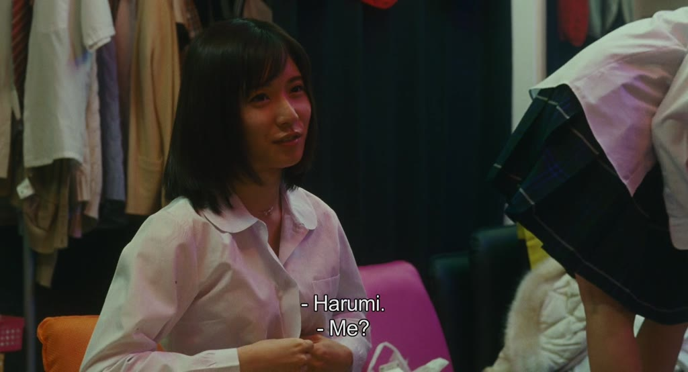

Image context
Search input:
1. PROLOGUE
Search mode: paragraph_v Targeting: 3.5×
Selected image

Region 0 — poop
All regions
Region 0 — ['transvestite', 'womanizer', 'halt', 'kanji'], ['fertility', 'ester', 'trafficker', 'halt', 'transvestite'], ['volunteering', 'inspect', 'nationalising', 'surround'], ['calling', 'kanji', 'parting', 'apologize'], ['nationalising', 'surround', 'volunteering', 'rhetoric'], ['apologize', 'parting', 'conclude'], ['hush', 'ester', 'calling', 'inpatient'], ['transvestite', 'trafficker', 'womanizer', 'hush'], ['volunteering', 'inspect', 'diaper'], ['calling', 'rhetoric', 'disrespecting'], ['fantasizing', 'transvestite', 'diaper'], ['transvestite', 'inpatient', 'heartbeat'], ['transvestite', 'peso', 'kanji'], ['kanji', 'transvestite', 'peso'], ['hunch', 'transvestite'], ['surround', 'unity', 'halt'], ['disrespecting', 'transvestite', 'apologize'], ['hush', 'galore', 'transvestite'], ['womanizer', 'fantasizing', 'transvestite'], ['heartbeat', 'surround', 'halt']
- assets/film_frames_300/Shoplifters.2018.1080p.WEBRip.x264-YTS.AM__24db8cc1e2__t01676.000__tc00-27-56.000__w300.jpg — ['transvestite', 'womanizer', 'halt', 'kanji']
- assets/film_frames_300/Youth_-_Paolo_Sorrentino_(2015)__c4516fb4c9__t03640.000__tc01-00-40.000__w300.jpg — ['fertility', 'ester', 'trafficker', 'halt', 'transvestite']
- assets/film_frames_300/I,_Daniel_Blake_-_Ken_Loach_(2016)__a8f947f920__t03400.000__tc00-56-40.000__w300.jpg — ['volunteering', 'inspect', 'nationalising', 'surround']
- assets/film_frames_300/Sorry.We.Missed.You.2019.HC.HDRip.XviD.AC3-EVO__5f56035b72__t01086.000__tc00-18-06.000__w300.jpg — ['calling', 'kanji', 'parting', 'apologize']
- assets/film_frames_300/Another_Round_(Druk)_-_Thomas_Vinterberg_(2020)__e8a862c177__t00469.000__tc00-07-49.000__w300.jpg — ['nationalising', 'surround', 'volunteering', 'rhetoric']
- assets/film_frames_300/Sorry.We.Missed.You.2019.HC.HDRip.XviD.AC3-EVO__21ecaee6ff__t00050.000__tc00-00-50.000__w300.jpg — ['apologize', 'parting', 'conclude']
- assets/film_frames_300/The_Hand_of_God_-_Paolo_Sorrentino_(2021)__6adfb06939__t02610.000__tc00-43-30.000__w300.jpg — ['hush', 'ester', 'calling', 'inpatient']
- assets/film_frames_300/Pulp_Fiction_-_Quentin_Tarantino_(1994)__5687b32103__t04260.000__tc01-11-00.000__w300.jpg — ['transvestite', 'trafficker', 'womanizer', 'hush']
- assets/film_frames_300/The_Florida_Project_-_Sean_Baker_(2017)__d6730aa8b9__t01477.000__tc00-24-37.000__w300.jpg — ['volunteering', 'inspect', 'diaper']
- assets/film_frames_300/Anora_-_Sean_Baker_(2024)__0379e31a75__t02582.000__tc00-43-02.000__w300.jpg — ['calling', 'rhetoric', 'disrespecting']
- assets/film_frames_300/All_About_My_Mother_(Todo_sobre_mi_madre)_-_Pedro_Almodvar_(1999)__b3e07b0c75__t01677.000__tc00-27-57.000__w300.jpg — ['fantasizing', 'transvestite', 'diaper']
- assets/film_frames_300/High_Heels_(Tacones_lejanos)_-_Pedro_Almodvar_(1991)__f9c61ba887__t06249.000__tc01-44-09.000__w300.jpg — ['transvestite', 'inpatient', 'heartbeat']
- assets/film_frames_300/Happy_Hour_-_Ryusuke_Hamaguchi_(2015)__1a1d078039__t15137.000__tc04-12-17.000__w300.jpg — ['transvestite', 'peso', 'kanji']
- assets/film_frames_300/Happy_Hour_-_Ryusuke_Hamaguchi_(2015)__8628c838d8__t14110.000__tc03-55-10.000__w300.jpg — ['kanji', 'transvestite', 'peso']
- assets/film_frames_300/Mulholland_Dr._-_David_Lynch_(2001)__278aa317f2__t04544.000__tc01-15-44.000__w300.jpg — ['hunch', 'transvestite']
- assets/film_frames_300/Evil_Does_Not_Exist_-_Rysuke_Hamaguchi_(2023)__957d588845__t03000.000__tc00-50-00.000__w300.jpg — ['surround', 'unity', 'halt']
- assets/film_frames_300/Anora_-_Sean_Baker_(2024)__154095e7c9__t06821.000__tc01-53-41.000__w300.jpg — ['disrespecting', 'transvestite', 'apologize']
- assets/film_frames_300/Under_the_Skin_-_Jonathan_Glazer_(2013)__4b611d78ba__t01890.000__tc00-31-30.000__w300.jpg — ['hush', 'galore', 'transvestite']
- assets/film_frames_300/Kika_-_Pedro_Almodvar_(1993)__bf87424bfe__t00886.000__tc00-14-46.000__w300.jpg — ['womanizer', 'fantasizing', 'transvestite']
- assets/film_frames_300/Babylon_-_Damien_Chazelle_(2022)__a2711bd424__t04642.000__tc01-17-22.000__w300.jpg — ['heartbeat', 'surround', 'halt']
Region 1 — ['laboratory', 'virtual', 'sputnik', 'shuttle'], ['shuttle', 'virtual', 'sputnik', 'laboratory'], ['soprano', 'newsreel', 'smith', 'johnny'], ['coloration', 'soprano', 'weeping', 'johnny'], ['cappuccino', 'narcolepsy', 'weeping'], ['zipper', 'capillary', 'draping', 'elastic'], ['newsreel', 'cappuccino', 'midtown'], ['sputnik', 'zipper', 'elastic', 'antenna'], ['antenna', 'videotape', 'virtual'], ['videotape', 'virtual', 'narcolepsy'], ['draping', 'soprano', 'murderess', 'coloration'], ['recombination', 'midtown', 'laboratory'], ['smith', 'johnny', 'newsreel', 'temper'], ['sputnik', 'laboratory', 'electrified', 'recombination'], ['sputnik', 'moonless', 'glitch'], ['fraudulent', 'coloration', 'laboratory'], ['fraudulent', 'sputnik'], ['shuttle', 'cicada', 'seaplane'], ['virtual', 'laboratory', 'shuttle', 'vision'], ['moonless', 'virtual', 'sputnik']
- assets/film_frames_300/2001_A_Space_Odyssey_-_Stanley_Kubrick_(1968)__714d29a71c__t04780.000__tc01-19-40.000__w300.jpg — ['laboratory', 'virtual', 'sputnik', 'shuttle']
- assets/film_frames_300/Requiem_for_a_Dream_-_Darren_Aronofsky_(2000)__1347ab3cf6__t00950.000__tc00-15-50.000__w300.jpg — ['shuttle', 'virtual', 'sputnik', 'laboratory']
- assets/film_frames_300/Lolita_-_Stanley_Kubrick_(1962)__0ac80709ec__t01057.000__tc00-17-37.000__w300.jpg — ['soprano', 'newsreel', 'smith', 'johnny']
- assets/film_frames_300/The_Graduate_-_Mike_Nichols_(1967)__d43c1e4311__t04218.000__tc01-10-18.000__w300.jpg — ['coloration', 'soprano', 'weeping', 'johnny']
- assets/film_frames_300/Three_Colours_White_-_Krzysztof_Kielowski_(1994)__f58f2d2c13__t02000.000__tc00-33-20.000__w300.jpg — ['cappuccino', 'narcolepsy', 'weeping']
- assets/film_frames_300/Kill_Bill_Vol._1_-_Quentin_Tarantino_(2003)__80e1336855__t05130.000__tc01-25-30.000__w300.jpg — ['zipper', 'capillary', 'draping', 'elastic']
- assets/film_frames_300/La_Dolce_Vita_-_Federico_Fellini_(1960)__c01dbfcd3b__t05800.000__tc01-36-40.000__w300.jpg — ['newsreel', 'cappuccino', 'midtown']
- assets/film_frames_300/Raging_Bull_-_Martin_Scorsese_(1980)__198ab2657b__t07286.000__tc02-01-26.000__w300.jpg — ['sputnik', 'zipper', 'elastic', 'antenna']
- assets/film_frames_300/The_Young_Pope_S01E02_-_Paolo_Sorrentino_(2016)__fc164c27b1__t03200.000__tc00-53-20.000__w300.jpg — ['antenna', 'videotape', 'virtual']
- assets/film_frames_300/Turkish_Delight_-_Paul_Verhoeven_(1973)__2d55702776__t01250.000__tc00-20-50.000__w300.jpg — ['videotape', 'virtual', 'narcolepsy']
- assets/film_frames_300/Rear_Window_-_Alfred_Hitchcock_(1954)__5214982736__t05119.000__tc01-25-19.000__w300.jpg — ['draping', 'soprano', 'murderess', 'coloration']
- assets/film_frames_300/Songs_from_the_Second_Floor_-_Roy_Andersson_(2000)__9782a5d001__t01000.000__tc00-16-40.000__w300.jpg — ['recombination', 'midtown', 'laboratory']
- assets/film_frames_300/Lolita_-_Stanley_Kubrick_(1962)__f6e04e0eca__t04765.000__tc01-19-25.000__w300.jpg — ['smith', 'johnny', 'newsreel', 'temper']
- assets/film_frames_300/Brazil_-_Terry_Gilliam_(1985)__1950e28a18__t03476.000__tc00-57-56.000__w300.jpg — ['sputnik', 'laboratory', 'electrified', 'recombination']
- assets/film_frames_300/The_Elephant_Man_-_David_Lynch_(1980)__a084c549f8__t07190.000__tc01-59-50.000__w300.jpg — ['sputnik', 'moonless', 'glitch']
- assets/film_frames_300/The_Graduate_-_Mike_Nichols_(1967)__4c6ccb5a68__t04386.000__tc01-13-06.000__w300.jpg — ['fraudulent', 'coloration', 'laboratory']
- assets/film_frames_300/Brazil_-_Terry_Gilliam_(1985)__d7e79fce1a__t05041.000__tc01-24-01.000__w300.jpg — ['fraudulent', 'sputnik']
- assets/film_frames_300/Nausica_of_the_Valley_of_the_Wind_-_Hayao_Miyazaki_(1984)__52cdb04dbd__t03119.000__tc00-51-59.000__w300.jpg — ['shuttle', 'cicada', 'seaplane']
- assets/film_frames_300/2001_A_Space_Odyssey_-_Stanley_Kubrick_(1968)__187cb5fb9c__t01644.000__tc00-27-24.000__w300.jpg — ['virtual', 'laboratory', 'shuttle', 'vision']
- assets/film_frames_300/2001_A_Space_Odyssey_-_Stanley_Kubrick_(1968)__ff55c173e4__t02740.000__tc00-45-40.000__w300.jpg — ['moonless', 'virtual', 'sputnik']
Region 2 — ['gimpy', 'timothy', 'flunky'], ['gimpy', 'timothy', 'flunky'], ['valuation', 'attractive', 'armrest', 'agreeing'], ['attractive', 'dutch', 'agreeing'], ['fantasist', 'coalition'], ['vodka', 'dutch', 'libertarian'], ['preach', 'libertarian', 'valuation', 'armrest'], ['chardonnay', 'lightweight'], ['vodka', 'farce', 'drunkenness'], ['irritable', 'dysfunctional', 'panicky'], ['brainwashing', 'hypothesis'], ['brainwashing', 'hypothesis'], ['arsehole', 'coalition'], ['percentage', 'liking'], ['derive', 'delineation'], ['delineation', 'derive'], ['irritable', 'chardonnay'], ['sceptical', 'farce'], ['nutritious', 'heartburn'], ['heartburn', 'nutritious']
- assets/film_frames_300/Another_Round_(Druk)_-_Thomas_Vinterberg_(2020)__a7567336bc__t03970.000__tc01-06-10.000__w300.jpg — ['gimpy', 'timothy', 'flunky']
- assets/film_frames_300/Another_Round_(Druk)_-_Thomas_Vinterberg_(2020)__a7567336bc__t03970.000__tc01-06-10.000__w300.jpg — ['gimpy', 'timothy', 'flunky']
- assets/film_frames_300/The_Wolf_of_Wall_Street_-_Martin_Scorsese_(2013)__89ccb65171__t05480.000__tc01-31-20.000__w300.jpg — ['valuation', 'attractive', 'armrest', 'agreeing']
- assets/film_frames_300/Another_Round_(Druk)_-_Thomas_Vinterberg_(2020)__cd280dcffa__t02260.000__tc00-37-40.000__w300.jpg — ['attractive', 'dutch', 'agreeing']
- assets/film_frames_300/The_Gentlemen_-_Guy_Ritchie_(2019)__e9ef3b8b6e__t00920.000__tc00-15-20.000__w300.jpg — ['fantasist', 'coalition']
- assets/film_frames_300/Another_Round_(Druk)_-_Thomas_Vinterberg_(2020)__f6f0e619e5__t03996.000__tc01-06-36.000__w300.jpg — ['vodka', 'dutch', 'libertarian']
- assets/film_frames_300/The_Wolf_of_Wall_Street_-_Martin_Scorsese_(2013)__177ce1ebfc__t02955.000__tc00-49-15.000__w300.jpg — ['preach', 'libertarian', 'valuation', 'armrest']
- assets/film_frames_300/Raging_Bull_-_Martin_Scorsese_(1980)__2bb32c2a09__t04420.000__tc01-13-40.000__w300.jpg — ['chardonnay', 'lightweight']
- assets/film_frames_300/La_Notte_-_Michelangelo_Antonioni_(1961)__bb1c9277f4__t00778.000__tc00-12-58.000__w300.jpg — ['vodka', 'farce', 'drunkenness']
- assets/film_frames_300/Im_So_Excited_(Los_amantes_pasajeros)_-_Pedro_Almodvar_(2013)__80661b2aa9__t00674.000__tc00-11-14.000__w300.jpg — ['irritable', 'dysfunctional', 'panicky']
- assets/film_frames_300/Another_Round_(Druk)_-_Thomas_Vinterberg_(2020)__cb7a726509__t00278.000__tc00-04-38.000__w300.jpg — ['brainwashing', 'hypothesis']
- assets/film_frames_300/Another_Round_(Druk)_-_Thomas_Vinterberg_(2020)__99b298af9e__t00270.000__tc00-04-30.000__w300.jpg — ['brainwashing', 'hypothesis']
- assets/film_frames_300/Another_Round_(Druk)_-_Thomas_Vinterberg_(2020)__9213cf0aac__t02760.000__tc00-46-00.000__w300.jpg — ['arsehole', 'coalition']
- assets/film_frames_300/The_Gentlemen_-_Guy_Ritchie_(2019)__ad7c1a565a__t01022.000__tc00-17-02.000__w300.jpg — ['percentage', 'liking']
- assets/film_frames_300/Another_Round_(Druk)_-_Thomas_Vinterberg_(2020)__f1200514a4__t04051.000__tc01-07-31.000__w300.jpg — ['derive', 'delineation']
- assets/film_frames_300/Youth_-_Paolo_Sorrentino_(2015)__b763c807db__t07150.000__tc01-59-10.000__w300.jpg — ['delineation', 'derive']
- assets/film_frames_300/Blue_Jasmine_-_Woody_Allen_(2013)__4361b1f28e__t01689.000__tc00-28-09.000__w300.jpg — ['irritable', 'chardonnay']
- assets/film_frames_300/The_Flower_of_My_Secret_(La_flor_de_mi_secreto)_-_Pedro_Almodvar_(1995)__1640011d3c__t00611.000__tc00-10-11.000__w300.jpg — ['sceptical', 'farce']
- assets/film_frames_300/Talk_to_Her_(Hable_con_ella)_-_Pedro_Almodvar_(2002)__def0897a38__t03515.000__tc00-58-35.000__w300.jpg — ['nutritious', 'heartburn']
- assets/film_frames_300/Anora_-_Sean_Baker_(2024)__650e1f76cd__t06235.000__tc01-43-55.000__w300.jpg — ['heartburn', 'nutritious']
Region 3 — ['foal', 'stabling', 'burro', 'mule', 'grazing', 'barn', 'pasture', 'lonesome'], ['foal', 'stabling', 'barn', 'pasture', 'lonesome', 'burro', 'mule', 'grazing'], ['baptized', 'amphibious', 'drowns', 'tadpole', 'camouflage', 'drowned', 'muck', 'water'], ['drowned', 'dive', 'crayfish', 'sank', 'float', 'baptized', 'flotsam'], ['splash', 'water', 'drowned', 'manta', 'float', 'drowns', 'dive'], ['hedgerow', 'bamboo', 'bush', 'camouflaging', 'aphid', 'camouflage', 'watercress'], ['crayfish', 'aphid', 'grazing', 'wheat', 'trapping', 'hedgerow', 'bamboo', 'foal'], ['misty', 'grazing', 'colt', 'agricultural', 'foal', 'roaming'], ['watermills', 'sawmill', 'roaming', 'stabling', 'agricultural', 'trapping'], ['trout', 'camouflaging', 'tadpole', 'camouflage', 'watercress', 'crayfish', 'painting'], ['dive', 'bush', 'drowns', 'peacock', 'flotsam', 'drowned'], ['colt', 'barn', 'watermills', 'foal', 'stabling', 'sawmill'], ['amphibious', 'sank', 'drowns', 'tadpole', 'camouflage'], ['asparagus', 'doe', 'pasture', 'grazing', 'mowing', 'camouflage'], ['water', 'sacrifice', 'drowned', 'muck', 'baptized', 'drowns', 'camouflage'], ['wheat', 'camouflage', 'grazing', 'bamboo', 'asparagus'], ['foal', 'sacrifice', 'burro', 'grazing', 'doe'], ['foal', 'grazing', 'crayfish', 'riverside', 'painting'], ['drowns', 'dive', 'misty', 'drowned', 'splash', 'water', 'baptized'], ['stabling', 'barn', 'gourd', 'lonesome', 'bamboo', 'kneeling']
- assets/film_frames_300/Seven_Samurai_-_Akira_Kurosawa_(1954)__473521bc88__t00820.000__tc00-13-40.000__w300.jpg — ['foal', 'stabling', 'burro', 'mule', 'grazing', 'barn', 'pasture', 'lonesome']
- assets/film_frames_300/Stntang_-_Bla_Tarr_(1994)__32d8ada611__t01570.000__tc00-26-10.000__w300.jpg — ['foal', 'stabling', 'barn', 'pasture', 'lonesome', 'burro', 'mule', 'grazing']
- assets/film_frames_300/Apocalypse_Now_-_Francis_Ford_Coppola_(1979)__f47effd544__t08866.000__tc02-27-46.000__w300.jpg — ['baptized', 'amphibious', 'drowns', 'tadpole', 'camouflage', 'drowned', 'muck', 'water']
- assets/film_frames_300/Andrei_Rublev_-_Andrei_Tarkovsky_(1966)__1372a5ce0e__t03670.000__tc01-01-10.000__w300.jpg — ['drowned', 'dive', 'crayfish', 'sank', 'float', 'baptized', 'flotsam']
- assets/film_frames_300/The_Graduate_-_Mike_Nichols_(1967)__adfaeb603c__t02347.000__tc00-39-07.000__w300.jpg — ['splash', 'water', 'drowned', 'manta', 'float', 'drowns', 'dive']
- assets/film_frames_300/The_Tale_of_the_Princess_Kaguya_-_Isao_Takahata_(2013)__0091c60a0f__t04670.000__tc01-17-50.000__w300.jpg — ['hedgerow', 'bamboo', 'bush', 'camouflaging', 'aphid', 'camouflage', 'watercress']
- assets/film_frames_300/Onibaba_-_Kaneto_Shindo_(1964)__c1fed8f510__t00440.000__tc00-07-20.000__w300.jpg — ['crayfish', 'aphid', 'grazing', 'wheat', 'trapping', 'hedgerow', 'bamboo', 'foal']
- assets/film_frames_300/Stntang_-_Bla_Tarr_(1994)__62d67c52b8__t04178.000__tc01-09-38.000__w300.jpg — ['misty', 'grazing', 'colt', 'agricultural', 'foal', 'roaming']
- assets/film_frames_300/Seven_Samurai_-_Akira_Kurosawa_(1954)__e49016b661__t03893.000__tc01-04-53.000__w300.jpg — ['watermills', 'sawmill', 'roaming', 'stabling', 'agricultural', 'trapping']
- assets/film_frames_300/Princess_Mononoke_-_Hayao_Miyazaki_(1997)__20c5617d72__t05250.000__tc01-27-30.000__w300.jpg — ['trout', 'camouflaging', 'tadpole', 'camouflage', 'watercress', 'crayfish', 'painting']
- assets/film_frames_300/Monster_-_Hirokazu_Kore-eda_(2023)__cd4534d201__t04396.000__tc01-13-16.000__w300.jpg — ['dive', 'bush', 'drowns', 'peacock', 'flotsam', 'drowned']
- assets/film_frames_300/Au_hasard_Balthazar_-_Robert_Bresson_(1966)__21cab22aea__t00593.000__tc00-09-53.000__w300.jpg — ['colt', 'barn', 'watermills', 'foal', 'stabling', 'sawmill']
- assets/film_frames_300/Ponyo_-_Hayao_Miyazaki_(2008)__6b5b9f6216__t01394.000__tc00-23-14.000__w300.jpg — ['amphibious', 'sank', 'drowns', 'tadpole', 'camouflage']
- assets/film_frames_300/Dreams_(Akira_Kurosawas_Dreams)_-_Akira_Kurosawa_(1990)__a479be67c6__t01490.000__tc00-24-50.000__w300.jpg — ['asparagus', 'doe', 'pasture', 'grazing', 'mowing', 'camouflage']
- assets/film_frames_300/Fear_and_Desire_-_Stanley_Kubrick_(1953)__f4d5fd9ce3__t03390.000__tc00-56-30.000__w300.jpg — ['water', 'sacrifice', 'drowned', 'muck', 'baptized', 'drowns', 'camouflage']
- assets/film_frames_300/Onibaba_-_Kaneto_Shindo_(1964)__116df36aa2__t05640.000__tc01-34-00.000__w300.jpg — ['wheat', 'camouflage', 'grazing', 'bamboo', 'asparagus']
- assets/film_frames_300/Princess_Mononoke_-_Hayao_Miyazaki_(1997)__fb49835ef5__t04060.000__tc01-07-40.000__w300.jpg — ['foal', 'sacrifice', 'burro', 'grazing', 'doe']
- assets/film_frames_300/Princess_Mononoke_-_Hayao_Miyazaki_(1997)__aa27c43c20__t01280.000__tc00-21-20.000__w300.jpg — ['foal', 'grazing', 'crayfish', 'riverside', 'painting']
- assets/film_frames_300/Django_Unchained_-_Quentin_Tarantino_(2012)__c9591fe0ce__t03140.000__tc00-52-20.000__w300.jpg — ['drowns', 'dive', 'misty', 'drowned', 'splash', 'water', 'baptized']
- assets/film_frames_300/Seven_Samurai_-_Akira_Kurosawa_(1954)__087860ef0b__t02450.000__tc00-40-50.000__w300.jpg — ['stabling', 'barn', 'gourd', 'lonesome', 'bamboo', 'kneeling']
Region 4 — ['narc', 'drugged', 'undercover', 'sleazebag', 'asshole', 'shakedown', 'weir'], ['curt', 'firehouse', 'narc', 'shakedown', 'enforcement', 'schnook', 'weir'], ['hemorrhaging', 'torture', 'bloodsucking', 'schnook', 'disemboweled', 'torturer', 'mutilating'], ['torturer', 'mutilating', 'stretcher', 'disemboweled', 'hemorrhaging', 'bloodsucking', 'torture'], ['sleazebag', 'curt', 'asshole', 'undercover', 'retard'], ['scumbags', 'onyx', 'firehouse', 'narc', 'enforcement'], ['undercover', 'drugged', 'scumbags', 'sleazebag', 'shakedown', 'flypaper'], ['asshole', 'flypaper', 'fucker', 'schnook', 'riff'], ['asshole', 'schnook', 'undercover', 'riff', 'fucker'], ['torturer', 'bloodsucking', 'disemboweled', 'bummed', 'hemorrhaging', 'stretcher'], ['retard', 'flypaper', 'sleazebag', 'schnook', 'bosh'], ['bummed', 'bloodsucking', 'introducing', 'shakedown', 'flypaper'], ['schnook', 'shakedown', 'bankrolled', 'hogan', 'narc', 'scumbags'], ['shakedown', 'bloodsucking', 'undercover', 'chickenshit', 'schnook'], ['firehouse', 'narc', 'enforcement', 'minority', 'shakedown'], ['narc', 'firehouse', 'shakedown', 'denomination'], ['narc', 'enforcement', 'firehouse', 'denomination'], ['schnook', 'bosh', 'drugged', 'narc'], ['firehouse', 'narc', 'shakedown', 'onyx'], ['undercover', 'shakedown', 'scumbags', 'weir', 'schnook', 'drink']
- /film-frame?film=%2FVolumes%2FPhD_drive2%2FVTFilms%2FThe.Big.Lebowski.1998.1080p.BrRip.x264.YIFY%2BHI.mp4&t=3020.000&w=1024 — ['narc', 'drugged', 'undercover', 'sleazebag', 'asshole', 'shakedown', 'weir']
- /film-frame?film=%2FVolumes%2FPhD_drive2%2FVTFilms%2FThe.Big.Lebowski.1998.1080p.BrRip.x264.YIFY%2BHI.mp4&t=5140.000&w=1024 — ['curt', 'firehouse', 'narc', 'shakedown', 'enforcement', 'schnook', 'weir']
- assets/film_frames_300/Reservoir_Dogs_-_Quentin_Tarantino_(1992)__42a778da8b__t00779.000__tc00-12-59.000__w300.jpg — ['hemorrhaging', 'torture', 'bloodsucking', 'schnook', 'disemboweled', 'torturer', 'mutilating']
- assets/film_frames_300/Holy_Motors_-_Leos_Carax_(2012)__124c96637e__t03580.000__tc00-59-40.000__w300.jpg — ['torturer', 'mutilating', 'stretcher', 'disemboweled', 'hemorrhaging', 'bloodsucking', 'torture']
- assets/film_frames_300/Brazil_-_Terry_Gilliam_(1985)__3195f535c2__t01698.000__tc00-28-18.000__w300.jpg — ['sleazebag', 'curt', 'asshole', 'undercover', 'retard']
- assets/film_frames_300/12_Monkeys_-_Terry_Gilliam_(1995)__68e7a9f2da__t00930.000__tc00-15-30.000__w300.jpg — ['scumbags', 'onyx', 'firehouse', 'narc', 'enforcement']
- assets/film_frames_300/Taxi_Driver_-_Martin_Scorsese_(1976)__80e4846f8f__t00190.000__tc00-03-10.000__w300.jpg — ['undercover', 'drugged', 'scumbags', 'sleazebag', 'shakedown', 'flypaper']
- assets/film_frames_300/Pulp_Fiction_-_Quentin_Tarantino_(1994)__349b173338__t08771.000__tc02-26-11.000__w300.jpg — ['asshole', 'flypaper', 'fucker', 'schnook', 'riff']
- assets/film_frames_300/Fear_and_Loathing_in_Las_Vegas_-_Terry_Gilliam_(1998)__6b73103589__t03440.000__tc00-57-20.000__w300.jpg — ['asshole', 'schnook', 'undercover', 'riff', 'fucker']
- assets/film_frames_300/Jackie_Brown_-_Quentin_Tarantino_(1997)__734e3a6268__t08660.000__tc02-24-20.000__w300.jpg — ['torturer', 'bloodsucking', 'disemboweled', 'bummed', 'hemorrhaging', 'stretcher']
- assets/film_frames_300/Point_Break_-_Kathryn_Bigelow_(1991)__06bc74dd5c__t05510.000__tc01-31-50.000__w300.jpg — ['retard', 'flypaper', 'sleazebag', 'schnook', 'bosh']
- assets/film_frames_300/The_Shining_-_Stanley_Kubrick_(1980)__71150a1e38__t05214.000__tc01-26-54.000__w300.jpg — ['bummed', 'bloodsucking', 'introducing', 'shakedown', 'flypaper']
- /film-frame?film=%2FVolumes%2FPhD_drive2%2FVTFilms%2FThe.Big.Lebowski.1998.1080p.BrRip.x264.YIFY%2BHI.mp4&t=495.000&w=1024 — ['schnook', 'shakedown', 'bankrolled', 'hogan', 'narc', 'scumbags']
- assets/film_frames_300/The_Shining_-_Stanley_Kubrick_(1980)__144925ea6f__t05166.000__tc01-26-06.000__w300.jpg — ['shakedown', 'bloodsucking', 'undercover', 'chickenshit', 'schnook']
- assets/film_frames_300/Magnolia_-_Paul_Thomas_Anderson_(1999)__8a74e77250__t02343.000__tc00-39-03.000__w300.jpg — ['firehouse', 'narc', 'enforcement', 'minority', 'shakedown']
- assets/film_frames_300/The_Wire_S01E11_(The_Hunt)_-_David_Simon_(2002)__114276613c__t03218.000__tc00-53-38.000__w300.jpg — ['narc', 'firehouse', 'shakedown', 'denomination']
- assets/film_frames_300/The_Wire_S01E11_(The_Hunt)_-_David_Simon_(2002)__6f06ea5833__t01102.000__tc00-18-22.000__w300.jpg — ['narc', 'enforcement', 'firehouse', 'denomination']
- assets/film_frames_300/Jackie_Brown_-_Quentin_Tarantino_(1997)__77518223e3__t00297.000__tc00-04-57.000__w300.jpg — ['schnook', 'bosh', 'drugged', 'narc']
- assets/film_frames_300/Jackie_Brown_-_Quentin_Tarantino_(1997)__6b2b50355a__t01587.000__tc00-26-27.000__w300.jpg — ['firehouse', 'narc', 'shakedown', 'onyx']
- assets/film_frames_300/The_Departed_-_Martin_Scorsese_(2006)__4b50f54167__t01323.000__tc00-22-03.000__w300.jpg — ['undercover', 'shakedown', 'scumbags', 'weir', 'schnook', 'drink']
Region 5 — ['duct', 'megaton', 'cistern', 'obelisk', 'dungeon', 'vault', 'chamber'], ['conduit', 'boiler', 'vault', 'dungeon', 'cistern', 'duct', 'megaton'], ['fumigation', 'megalopolis', 'pummeled', 'obelisk', 'impact', 'megaton'], ['clockwork', 'megalopolis', 'boiler', 'skitter'], ['tomb', 'cistern', 'clockwork', 'dungeon', 'labyrinth', 'chamber'], ['megaton', 'pummeled', 'impact', 'seasonal', 'hangar', 'fumigation'], ['dragon', 'skitter', 'freezer', 'abominable', 'megaton'], ['dungeon', 'tomb', 'wedged', 'obelisk', 'freezer'], ['defile', 'labyrinth', 'dungeon', 'hack'], ['duct', 'freezer', 'dungeon', 'vault', 'wedged', 'conduit'], ['tomb', 'hunk', 'cistern', 'obelisk', 'duke'], ['duke', 'cistern', 'obelisk', 'hunk'], ['journeyed', 'obelisk', 'megaton', 'journey'], ['clockwork', 'dungeon', 'hack', 'dirtball'], ['megaton', 'vault', 'dungeon', 'voyage', 'dragon'], ['clockwork', 'dungeon', 'voyage', 'boiler', 'vault', 'chamber', 'cistern'], ['tribe', 'dungeon', 'cistern', 'tomb'], ['dungeon', 'tribe', 'tomb'], ['labyrinth', 'chamber', 'defile', 'tomb', 'dungeon'], ['obelisk', 'tomb', 'journey', 'dungeon']
- assets/film_frames_300/12_Monkeys_-_Terry_Gilliam_(1995)__02ca8cb97a__t00600.000__tc00-10-00.000__w300.jpg — ['duct', 'megaton', 'cistern', 'obelisk', 'dungeon', 'vault', 'chamber']
- assets/film_frames_300/Holy_Motors_-_Leos_Carax_(2012)__3b69c8aee2__t02060.000__tc00-34-20.000__w300.jpg — ['conduit', 'boiler', 'vault', 'dungeon', 'cistern', 'duct', 'megaton']
- assets/film_frames_300/Grave_of_the_Fireflies_-_Isao_Takahata_(1988)__8a955093b4__t01410.000__tc00-23-30.000__w300.jpg — ['fumigation', 'megalopolis', 'pummeled', 'obelisk', 'impact', 'megaton']
- assets/film_frames_300/Brazil_-_Terry_Gilliam_(1985)__59ea9d902d__t06460.000__tc01-47-40.000__w300.jpg — ['clockwork', 'megalopolis', 'boiler', 'skitter']
- assets/film_frames_300/Dune_-_David_Lynch_(1984)__dc17197d6a__t03940.000__tc01-05-40.000__w300.jpg — ['tomb', 'cistern', 'clockwork', 'dungeon', 'labyrinth', 'chamber']
- assets/film_frames_300/12_Monkeys_-_Terry_Gilliam_(1995)__d0d07471e5__t03550.000__tc00-59-10.000__w300.jpg — ['megaton', 'pummeled', 'impact', 'seasonal', 'hangar', 'fumigation']
- assets/film_frames_300/Blade_Runner_-_Ridley_Scott_(1982)__80260e179e__t01640.000__tc00-27-20.000__w300.jpg — ['dragon', 'skitter', 'freezer', 'abominable', 'megaton']
- assets/film_frames_300/Ulysses_Gaze_-_Theo_Angelopoulos_(1995)__31b00b15e6__t06410.000__tc01-46-50.000__w300.jpg — ['dungeon', 'tomb', 'wedged', 'obelisk', 'freezer']
- assets/film_frames_300/Dune_-_David_Lynch_(1984)__1b79b771e7__t07805.000__tc02-10-05.000__w300.jpg — ['defile', 'labyrinth', 'dungeon', 'hack']
- assets/film_frames_300/Ichi_the_Killer_-_Takashi_Miike_(2001)__34a564faf9__t07410.000__tc02-03-30.000__w300.jpg — ['duct', 'freezer', 'dungeon', 'vault', 'wedged', 'conduit']
- assets/film_frames_300/Nausica_of_the_Valley_of_the_Wind_-_Hayao_Miyazaki_(1984)__62ee5c0a4c__t04952.000__tc01-22-32.000__w300.jpg — ['tomb', 'hunk', 'cistern', 'obelisk', 'duke']
- assets/film_frames_300/Nausica_of_the_Valley_of_the_Wind_-_Hayao_Miyazaki_(1984)__94c3d7c44c__t04958.000__tc01-22-38.000__w300.jpg — ['duke', 'cistern', 'obelisk', 'hunk']
- assets/film_frames_300/Megalopolis_-_Francis_Ford_Coppola_(2024)__744b6b3271__t07579.000__tc02-06-19.000__w300.jpg — ['journeyed', 'obelisk', 'megaton', 'journey']
- assets/film_frames_300/The_Cook,_the_Thief,_His_Wife_Her_Lover_-_Peter_Greenaway_(1989)__8e5882aaa8__t00325.000__tc00-05-25.000__w300.jpg — ['clockwork', 'dungeon', 'hack', 'dirtball']
- assets/film_frames_300/Blade_Runner_-_Ridley_Scott_(1982)__4b84acee0b__t02300.000__tc00-38-20.000__w300.jpg — ['megaton', 'vault', 'dungeon', 'voyage', 'dragon']
- assets/film_frames_300/Castle_in_the_Sky_-_Hayao_Miyazaki_(1986)__e58c665122__t00590.000__tc00-09-50.000__w300.jpg — ['clockwork', 'dungeon', 'voyage', 'boiler', 'vault', 'chamber', 'cistern']
- assets/film_frames_300/Spartacus_-_Stanley_Kubrick_(1960)__ea2faee617__t01104.000__tc00-18-24.000__w300.jpg — ['tribe', 'dungeon', 'cistern', 'tomb']
- assets/film_frames_300/Seven_Samurai_-_Akira_Kurosawa_(1954)__b627ed2adf__t08398.000__tc02-19-58.000__w300.jpg — ['dungeon', 'tribe', 'tomb']
- assets/film_frames_300/Dune_-_David_Lynch_(1984)__7b94ec43ef__t07170.000__tc01-59-30.000__w300.jpg — ['labyrinth', 'chamber', 'defile', 'tomb', 'dungeon']
- assets/film_frames_300/North_by_Northwest_-_Alfred_Hitchcock_(1959)__b754438932__t08000.000__tc02-13-20.000__w300.jpg — ['obelisk', 'tomb', 'journey', 'dungeon']
Region 6 — ['coco', 'musical', 'grooving', 'virtuoso', 'cowbell', 'ballad', 'performer', 'instrument', 'singer', 'rhythmic'], ['grooving', 'virtuoso', 'musical', 'singer', 'rhythmic', 'cowbell', 'ballad', 'conducting', 'instrument'], ['rhythmic', 'performer', 'rendition', 'conducting', 'elevate', 'performed', 'stage', 'singer'], ['acoustical', 'nightclub', 'elevate', 'auditorium', 'grooving', 'stage', 'musical', 'ballad', 'conducting'], ['jazzed', 'festivity', 'bass', 'grooving', 'nightclub', 'cowbell'], ['instrument', 'bass', 'grooving', 'strum', 'jam', 'yep', 'cowbell'], ['musical', 'strum', 'performed', 'ballad', 'performer', 'rendition', 'acoustical', 'instrument', 'rhythmic'], ['jazzed', 'fro', 'jam', 'grooving', 'singer', 'cowbell'], ['tribute', 'singer', 'raffle', 'ballad', 'nightclub', 'award', 'performer'], ['coco', 'musical', 'stage', 'conducting', 'dreamland', 'auditorium'], ['award', 'performer', 'ballad', 'conducting', 'musical', 'elevate', 'showtime', 'virtuoso', 'singer'], ['grooving', 'promoter', 'elevate', 'raged', 'nightclub'], ['nightclub', 'elevate', 'showtime', 'grooving', 'pimping', 'musical'], ['euphoric', 'grooving', 'cowbell', 'nightclub', 'elevate', 'raged'], ['performer', 'fro', 'cowbell', 'magician', 'conducting'], ['grooving', 'bash', 'festivity', 'cowbell', 'nightclub'], ['grooving', 'strum', 'yep', 'cowbell', 'jam'], ['nightclub', 'cowbell', 'ballad', 'pimping', 'grooving', 'bash'], ['virtuoso', 'singer', 'fag', 'ballad'], ['elevate', 'performer', 'nightclub', 'magician', 'conducting']
- assets/film_frames_300/Elvis_-_Baz_Luhrmann_(2022)__8a57e5488f__t06210.000__tc01-43-30.000__w300.jpg — ['coco', 'musical', 'grooving', 'virtuoso', 'cowbell', 'ballad', 'performer', 'instrument', 'singer', 'rhythmic']
- assets/film_frames_300/Youth_-_Paolo_Sorrentino_(2015)__0978382290__t06700.000__tc01-51-40.000__w300.jpg — ['grooving', 'virtuoso', 'musical', 'singer', 'rhythmic', 'cowbell', 'ballad', 'conducting', 'instrument']
- assets/film_frames_300/Magnolia_-_Paul_Thomas_Anderson_(1999)__6c18aebb59__t01510.000__tc00-25-10.000__w300.jpg — ['rhythmic', 'performer', 'rendition', 'conducting', 'elevate', 'performed', 'stage', 'singer']
- assets/film_frames_300/Elvis_-_Baz_Luhrmann_(2022)__876ac5e10d__t06770.000__tc01-52-50.000__w300.jpg — ['acoustical', 'nightclub', 'elevate', 'auditorium', 'grooving', 'stage', 'musical', 'ballad', 'conducting']
- assets/film_frames_300/Beau_Travail_-_Claire_Denis_(1999)__931da12717__t01250.000__tc00-20-50.000__w300.jpg — ['jazzed', 'festivity', 'bass', 'grooving', 'nightclub', 'cowbell']
- assets/film_frames_300/Fear_and_Loathing_in_Las_Vegas_-_Terry_Gilliam_(1998)__6aaf193be6__t03381.000__tc00-56-21.000__w300.jpg — ['instrument', 'bass', 'grooving', 'strum', 'jam', 'yep', 'cowbell']
- assets/film_frames_300/A_Complete_Unknown_-_James_Mangold_(2024)__5e7dac7da6__t03810.000__tc01-03-30.000__w300.jpg — ['musical', 'strum', 'performed', 'ballad', 'performer', 'rendition', 'acoustical', 'instrument', 'rhythmic']
- assets/film_frames_300/Elvis_-_Baz_Luhrmann_(2022)__36dc53c692__t06155.000__tc01-42-35.000__w300.jpg — ['jazzed', 'fro', 'jam', 'grooving', 'singer', 'cowbell']
- assets/film_frames_300/Fear_and_Loathing_in_Las_Vegas_-_Terry_Gilliam_(1998)__aab8893c8f__t01797.000__tc00-29-57.000__w300.jpg — ['tribute', 'singer', 'raffle', 'ballad', 'nightclub', 'award', 'performer']
- assets/film_frames_300/Bad_Education_(La_mala_educacin)_-_Pedro_Almodvar_(2004)__cb938b13d4__t00540.000__tc00-09-00.000__w300.jpg — ['coco', 'musical', 'stage', 'conducting', 'dreamland', 'auditorium']
- assets/film_frames_300/Elvis_-_Baz_Luhrmann_(2022)__c54a5e70fd__t05586.000__tc01-33-06.000__w300.jpg — ['award', 'performer', 'ballad', 'conducting', 'musical', 'elevate', 'showtime', 'virtuoso', 'singer']
- assets/film_frames_300/Fear_and_Loathing_in_Las_Vegas_-_Terry_Gilliam_(1998)__e3e16b0768__t03229.000__tc00-53-49.000__w300.jpg — ['grooving', 'promoter', 'elevate', 'raged', 'nightclub']
- assets/film_frames_300/Elvis_-_Baz_Luhrmann_(2022)__29cea69fa6__t04100.000__tc01-08-20.000__w300.jpg — ['nightclub', 'elevate', 'showtime', 'grooving', 'pimping', 'musical']
- assets/film_frames_300/Fear_and_Loathing_in_Las_Vegas_-_Terry_Gilliam_(1998)__50004d807a__t03230.000__tc00-53-50.000__w300.jpg — ['euphoric', 'grooving', 'cowbell', 'nightclub', 'elevate', 'raged']
- assets/film_frames_300/A_Clockwork_Orange_-_Stanley_Kubrick_(1971)__d4d9580c02__t04975.000__tc01-22-55.000__w300.jpg — ['performer', 'fro', 'cowbell', 'magician', 'conducting']
- assets/film_frames_300/Fear_and_Loathing_in_Las_Vegas_-_Terry_Gilliam_(1998)__d29c08e53d__t02060.000__tc00-34-20.000__w300.jpg — ['grooving', 'bash', 'festivity', 'cowbell', 'nightclub']
- assets/film_frames_300/Labyrinth_of_Passion_(Laberinto_de_pasiones)_-_Pedro_Almodvar_(1982)__a16302cf89__t02090.000__tc00-34-50.000__w300.jpg — ['grooving', 'strum', 'yep', 'cowbell', 'jam']
- assets/film_frames_300/Elvis_-_Baz_Luhrmann_(2022)__8975e877f0__t04099.000__tc01-08-19.000__w300.jpg — ['nightclub', 'cowbell', 'ballad', 'pimping', 'grooving', 'bash']
- assets/film_frames_300/Elvis_-_Baz_Luhrmann_(2022)__5de8dd1adf__t07717.000__tc02-08-37.000__w300.jpg — ['virtuoso', 'singer', 'fag', 'ballad']
- assets/film_frames_300/Elvis_-_Baz_Luhrmann_(2022)__e80ac393c8__t05997.000__tc01-39-57.000__w300.jpg — ['elevate', 'performer', 'nightclub', 'magician', 'conducting']
Region 7 — ['endeared', 'simpleton', 'ecologist'], ['null', 'crueller', 'fasten'], ['unnatural', 'undermined', 'ecologist'], ['immunity', 'reliability', 'caveat', 'tragic'], ['reliability', 'epithet', 'perseverance', 'stupidity'], ['explaining', 'explains'], ['contrary', 'conceit'], ['conceit', 'contrary'], ['archetypal', 'resourceful', 'culture'], ['endeared', 'answerable'], ['simpleton', 'capricious', 'ecologist'], ['stupidity', 'reliability', 'epithet', 'perseverance'], ['parable', 'placate'], ['resourceful', 'immunity'], ['reconcile', 'contented', 'ecologist'], ['answerable', 'tragic'], ['placate', 'lateral'], ['rhetorical', 'parable', 'uncultured'], ['fundamental', 'form'], ['presumption', 'precondition']
- assets/film_frames_300/Jauja.2014.DVDRip.x264.HORiZON-ArtSubs__7ea4bea665__t00484.000__tc00-08-04.000__w300.jpg — ['endeared', 'simpleton', 'ecologist']
- assets/film_frames_300/Jauja.2014.DVDRip.x264.HORiZON-ArtSubs__eb82f84fa8__t06360.000__tc01-46-00.000__w300.jpg — ['null', 'crueller', 'fasten']
- assets/film_frames_300/Jauja.2014.DVDRip.x264.HORiZON-ArtSubs__567d4ac7e9__t01496.000__tc00-24-56.000__w300.jpg — ['unnatural', 'undermined', 'ecologist']
- assets/film_frames_300/Jauja.2014.DVDRip.x264.HORiZON-ArtSubs__a9399de573__t01678.000__tc00-27-58.000__w300.jpg — ['immunity', 'reliability', 'caveat', 'tragic']
- assets/film_frames_300/Jauja.2014.DVDRip.x264.HORiZON-ArtSubs__9b9ad43ba9__t01440.000__tc00-24-00.000__w300.jpg — ['reliability', 'epithet', 'perseverance', 'stupidity']
- assets/film_frames_300/Jauja.2014.DVDRip.x264.HORiZON-ArtSubs__4a24ffa9a0__t01361.000__tc00-22-41.000__w300.jpg — ['explaining', 'explains']
- assets/film_frames_300/Jauja.2014.DVDRip.x264.HORiZON-ArtSubs__dc2d34f4b2__t00104.000__tc00-01-44.000__w300.jpg — ['contrary', 'conceit']
- assets/film_frames_300/Apocalypse_Now_-_Francis_Ford_Coppola_(1979)__1663c41662__t01421.000__tc00-23-41.000__w300.jpg — ['conceit', 'contrary']
- assets/film_frames_300/Underground_-_Emir_Kusturica_(1995)__522afaaf93__t08547.000__tc02-22-27.000__w300.jpg — ['archetypal', 'resourceful', 'culture']
- assets/film_frames_300/Volver_-_Pedro_Almodvar_(2006)__c27debc98b__t00671.000__tc00-11-11.000__w300.jpg — ['endeared', 'answerable']
- assets/film_frames_300/Jauja.2014.DVDRip.x264.HORiZON-ArtSubs__9fc29932a1__t00478.000__tc00-07-58.000__w300.jpg — ['simpleton', 'capricious', 'ecologist']
- assets/film_frames_300/Jauja.2014.DVDRip.x264.HORiZON-ArtSubs__9b9ad43ba9__t01440.000__tc00-24-00.000__w300.jpg — ['stupidity', 'reliability', 'epithet', 'perseverance']
- assets/film_frames_300/The_Virgin_Suicides_-_Sofia_Coppola_(1999)__e961ecbcd7__t05515.000__tc01-31-55.000__w300.jpg — ['parable', 'placate']
- assets/film_frames_300/Apocalypse_Now_-_Francis_Ford_Coppola_(1979)__9935a3ce76__t09812.000__tc02-43-32.000__w300.jpg — ['resourceful', 'immunity']
- assets/film_frames_300/Jauja.2014.DVDRip.x264.HORiZON-ArtSubs__5f5fd4db5f__t00615.000__tc00-10-15.000__w300.jpg — ['reconcile', 'contented', 'ecologist']
- assets/film_frames_300/Sorry.We.Missed.You.2019.1080p.WEBRip.x264-YTS.LT__b9535dc982__t01824.000__tc00-30-24.000__w300.jpg — ['answerable', 'tragic']
- assets/film_frames_300/Jauja.2014.DVDRip.x264.HORiZON-ArtSubs__8e33a6cfa1__t06340.000__tc01-45-40.000__w300.jpg — ['placate', 'lateral']
- assets/film_frames_300/Jauja.2014.DVDRip.x264.HORiZON-ArtSubs__18f90a6dfe__t00859.000__tc00-14-19.000__w300.jpg — ['rhetorical', 'parable', 'uncultured']
- assets/film_frames_300/Jauja.2014.DVDRip.x264.HORiZON-ArtSubs__3f272cce9c__t06330.000__tc01-45-30.000__w300.jpg — ['fundamental', 'form']
- assets/film_frames_300/Shoplifters.2018.1080p.WEBRip.x264-YTS.AM__84aba8a140__t05427.000__tc01-30-27.000__w300.jpg — ['presumption', 'precondition']
Region 8 — ['storehouse', 'salvaging', 'chimed', 'basement', 'cellar', 'condemned', 'gibbet', 'warehouse', 'colliery'], ['encountering', 'confinement', 'cellar', 'colliery', 'temperance', 'chimed', 'condemned', 'workhouse', 'storehouse'], ['grabbed', 'chimed', 'sledgehammer', 'hangman', 'underwent', 'condemned', 'gibbet', 'drain', 'door', 'sewer'], ['woolen', 'temperance', 'asleep', 'poofter', 'corbel', 'workhouse'], ['drain', 'poofter', 'warehouse', 'sewer', 'condemned', 'underwent', 'basement'], ['hangman', 'hollow', 'cellar', 'chimed', 'porter', 'encountering', 'confinement', 'condemned'], ['corbel', 'woolen', 'asleep', 'workhouse', 'slumping'], ['drain', 'plowing', 'divot', 'muddy', 'sewer', 'sludge'], ['storehouse', 'salvaging', 'cellar', 'sledgehammer', 'warehouse', 'basement'], ['door', 'porter', 'chimed', 'encountering', 'cellar', 'hollow'], ['corbel', 'gravely', 'poofter', 'colliery', 'determined'], ['determined', 'hangman', 'gravely', 'encountering'], ['woolen', 'colliery', 'outlying', 'chilblain'], ['chilblain', 'woolen', 'outlying', 'colliery'], ['asleep', 'exhausted', 'woolen', 'slumping', 'poofter'], ['gibbet', 'welded', 'colliery', 'drain'], ['corbel', 'poofter', 'chimed', 'colliery', 'vine'], ['storehouse', 'salvaging', 'perimeter', 'colliery', 'warehouse', 'condemned'], ['encountering', 'fog', 'gibbet', 'colliery', 'salvaging', 'perimeter'], ['door', 'storehouse', 'condemned', 'coop', 'colliery', 'warehouse', 'basement']
- assets/film_frames_300/Seven_Samurai_-_Akira_Kurosawa_(1954)__a5cd7ead92__t07530.000__tc02-05-30.000__w300.jpg — ['storehouse', 'salvaging', 'chimed', 'basement', 'cellar', 'condemned', 'gibbet', 'warehouse', 'colliery']
- assets/film_frames_300/Stalker_-_Andrei_Tarkovsky_(1979)__dc4da5893e__t00613.000__tc00-10-13.000__w300.jpg — ['encountering', 'confinement', 'cellar', 'colliery', 'temperance', 'chimed', 'condemned', 'workhouse', 'storehouse']
- assets/film_frames_300/The_Hand_of_God_-_Paolo_Sorrentino_(2021)__dac6de7eae__t06750.000__tc01-52-30.000__w300.jpg — ['grabbed', 'chimed', 'sledgehammer', 'hangman', 'underwent', 'condemned', 'gibbet', 'drain', 'door', 'sewer']
- assets/film_frames_300/Andrei_Rublev_-_Andrei_Tarkovsky_(1966)__47cdce4e1b__t01248.000__tc00-20-48.000__w300.jpg — ['woolen', 'temperance', 'asleep', 'poofter', 'corbel', 'workhouse']
- assets/film_frames_300/Trainspotting_-_Danny_Boyle_(1996)__c755af4676__t00540.000__tc00-09-00.000__w300.jpg — ['drain', 'poofter', 'warehouse', 'sewer', 'condemned', 'underwent', 'basement']
- assets/film_frames_300/Werckmeister_Harmonies_-_Bla_Tarr_gnes_Hranitzky_(2000)__8692bbac97__t05930.000__tc01-38-50.000__w300.jpg — ['hangman', 'hollow', 'cellar', 'chimed', 'porter', 'encountering', 'confinement', 'condemned']
- assets/film_frames_300/Andrei_Rublev_-_Andrei_Tarkovsky_(1966)__512e3d5dd4__t01295.000__tc00-21-35.000__w300.jpg — ['corbel', 'woolen', 'asleep', 'workhouse', 'slumping']
- assets/film_frames_300/There_Will_Be_Blood_-_Paul_Thomas_Anderson_(2007)__450c6370ff__t00720.000__tc00-12-00.000__w300.jpg — ['drain', 'plowing', 'divot', 'muddy', 'sewer', 'sludge']
- assets/film_frames_300/Underground_-_Emir_Kusturica_(1995)__5e5ef36806__t06440.000__tc01-47-20.000__w300.jpg — ['storehouse', 'salvaging', 'cellar', 'sledgehammer', 'warehouse', 'basement']
- assets/film_frames_300/Werckmeister_Harmonies_-_Bla_Tarr_gnes_Hranitzky_(2000)__bb9a7bdf78__t05933.000__tc01-38-53.000__w300.jpg — ['door', 'porter', 'chimed', 'encountering', 'cellar', 'hollow']
- assets/film_frames_300/Stntang_-_Bla_Tarr_(1994)__d03b6bb147__t24780.000__tc06-53-00.000__w300.jpg — ['corbel', 'gravely', 'poofter', 'colliery', 'determined']
- assets/film_frames_300/Stntang_-_Bla_Tarr_(1994)__47e9c32c1c__t22310.000__tc06-11-50.000__w300.jpg — ['determined', 'hangman', 'gravely', 'encountering']
- assets/film_frames_300/Stntang_-_Bla_Tarr_(1994)__0b40aa855c__t22351.000__tc06-12-31.000__w300.jpg — ['woolen', 'colliery', 'outlying', 'chilblain']
- assets/film_frames_300/Stntang_-_Bla_Tarr_(1994)__a4e7fb1346__t22340.000__tc06-12-20.000__w300.jpg — ['chilblain', 'woolen', 'outlying', 'colliery']
- assets/film_frames_300/Stalker_-_Andrei_Tarkovsky_(1979)__cafdb887a8__t05343.000__tc01-29-03.000__w300.jpg — ['asleep', 'exhausted', 'woolen', 'slumping', 'poofter']
- assets/film_frames_300/Au_hasard_Balthazar_-_Robert_Bresson_(1966)__9dc657bc42__t04680.000__tc01-18-00.000__w300.jpg — ['gibbet', 'welded', 'colliery', 'drain']
- assets/film_frames_300/Andrei_Rublev_-_Andrei_Tarkovsky_(1966)__784eee26e6__t04274.000__tc01-11-14.000__w300.jpg — ['corbel', 'poofter', 'chimed', 'colliery', 'vine']
- assets/film_frames_300/Stalker_-_Andrei_Tarkovsky_(1979)__ba4f0a98a3__t02070.000__tc00-34-30.000__w300.jpg — ['storehouse', 'salvaging', 'perimeter', 'colliery', 'warehouse', 'condemned']
- assets/film_frames_300/Stalker_-_Andrei_Tarkovsky_(1979)__8ce5f34f70__t02880.000__tc00-48-00.000__w300.jpg — ['encountering', 'fog', 'gibbet', 'colliery', 'salvaging', 'perimeter']
- assets/film_frames_300/Babylon_-_Damien_Chazelle_(2022)__abffc1d0bb__t04497.000__tc01-14-57.000__w300.jpg — ['door', 'storehouse', 'condemned', 'coop', 'colliery', 'warehouse', 'basement']